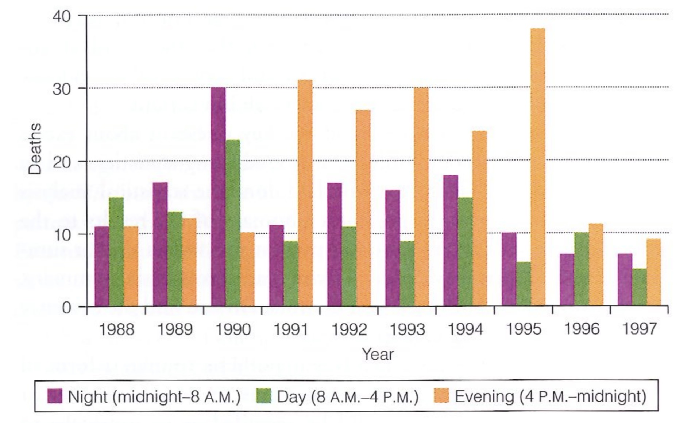
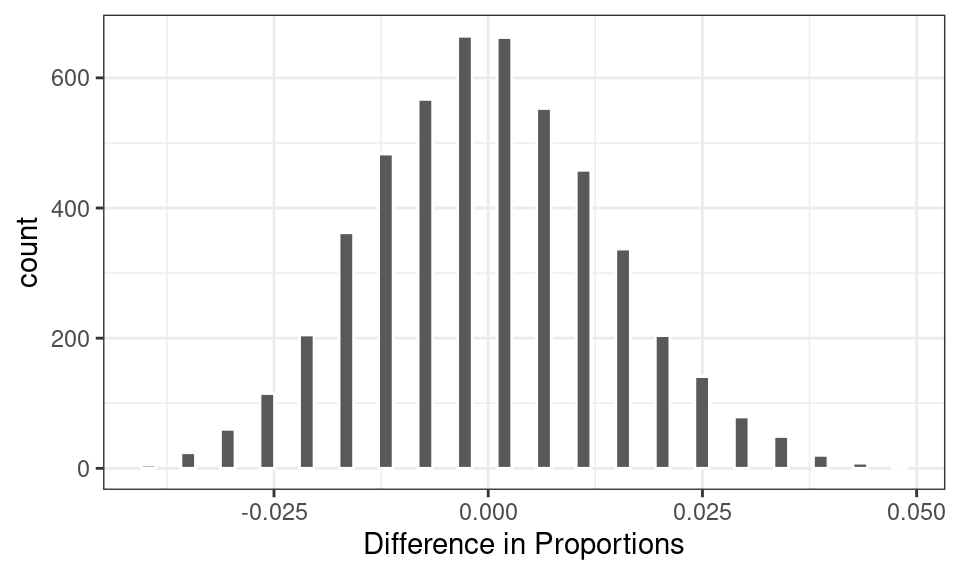
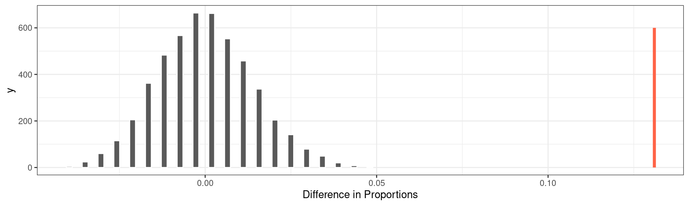
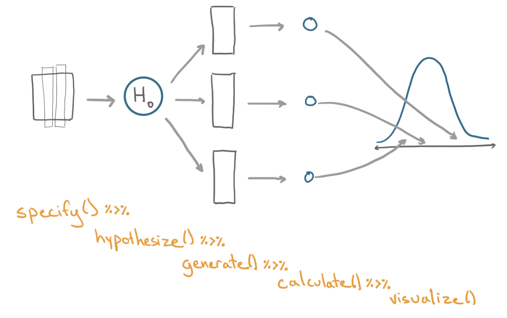

# A tibble: 1,641 × 3
shift death staff
<dbl> <chr> <chr>
1 626 no no_gilbert
2 590 no no_gilbert
3 1209 no no_gilbert
4 1122 no no_gilbert
5 622 no no_gilbert
6 1536 no no_gilbert
7 1472 no no_gilbert
8 214 no gilbert
9 277 yes no_gilbert
10 1332 no no_gilbert
# ℹ 1,631 more rowsHypothesis Testing
Measuring the consistency between a model and data
Classical statistics features two primary methods for using a sample of data to make an inference about a more general process. The first is the confidence interval, which expresses the uncertainty in an estimate of a population parameter. The second classical method of generalization is the hypothesis test.
The hypothesis test takes a more active approach to reasoning: it posits a specific explanation for how the data could be generated, then evaluates whether or not the observed data is consistent with that model. The hypothesis test is one of the most common statistical tools in the social and natural sciences, but the reasoning involved can be counter-intuitive. Let’s introduce the logic of a hypothesis test by looking at another criminal case that drew statisticians into the mix.
Example: The United States vs Kristen Gilbert

In 1989, fresh out of nursing school, Kristen Gilbert got a job at the VA Medical Center in Northampton, Massachusetts, not far from where she grew up1. Within a few years, she became admired for her skill and competence.
Gilbert’s skill was on display whenever a “code blue” alarm was sounded. This alarm indicates that a patient has gone into cardiac arrest and must be addressed quickly by administering a shot of epinephrine to restart the heart. Gilbert developed for a reputation for her steady hand in these crises.
By the mid-1990s, however, the other nurses started to grow suspicious. There seemed to be a few too many code blues, and a few too many deaths, during Gilbert’s shifts. The staff brought their concerns to the VA administration, who brought in a statistician to evaluate the data.
The Data
The data that the VA provided to the statistician contained the number of deaths at the medical center over the previous 10 years, broken out by the three shifts of the days: night, daytime, and evening. As part of the process of exploratory data analysis, the statistician constructed a plot.

This visualization reveals several striking trends. Between 1990 and 1995, there were dramatically more deaths than the years before and after that interval. Within that time span, it was the evening shift that had most of the deaths. The exception is 1990, when the night and daytime shifts had the most deaths.
So when was Gilbert working? She began working in this part of the hospital in March 1990 and stopped working in February 1996. Her shifts throughout that time span? The evening shifts. The one exception was 1990, when she was assigned to work the night shift.
This evidence is compelling in establishing an association between Gilbert and the increase in deaths. When the district attorney brought a case against Gilbert in court, this was the first line of evidence they provided. In a trial, however, there is a high burden of proof.
Could there be an alternative explanation for the trend found in this data?
The role of random chance
Suppose for a moment that the occurrence of deaths at the hospital had nothing to do with Gilbert being on shift. In that case we would expect that the proportion of shifts with a death would be fairly similar when comparing shifts where Gilbert was working and shifts where she was not. But we wouldn’t expect those proportions to be exactly equal. It’s reasonable to think that a slightly higher proportion of Gilbert’s shifts could have had a death just due to random chance, not due to anything malicious on her part.
So just how different were these proportions in the data? The plot above shows data from 1,641 individual shifts, on which three different variables were recorded: the shift number, whether or not there was a death on the shift, and whether or not Gilbert was working that shift.
Here are the first 10 observations.
Using this data frame, we can calculate the sample proportion of shifts where Gilbert was working (257) that had a death (40) and compare them to the sample proportion of shifts where Gilbert was not working (1384) that had a death (34).
\[ \hat{p}_{gilbert} - \hat{p}_{no\_gilbert} = \frac{40}{257} - \frac{34}{1384} = .155 - .024 = .131 \]
A note on notation: it’s common to use \(\hat{p}\) (“p hat”) to indicate that a proportion has been computed from a sample of data.
A difference of .131 seems dramatic, but is that within the bounds of what we might expect just due to chance? One way to address this question is to phrase it as: if in fact the probability of a death on a given shift is independent of whether or not Gilbert is on the shift, what values would we expect for the difference in observed proportions?
We can answer this question by using simulation. To a simulate a world in which deaths are independent of Gilbert, we can
- Shuffle (or permute) the values in the
deathvariable in the data frame to break the link between that variable and thestaffvariable. - Calculate the resulting difference in proportion of deaths in each group.
The rationale for shuffling values in one of the columns is that if in fact those two columns are independent of one another, then it was just random chance that led to a value of one variable landing in the same row as the value of the other variable. It could just as well have been a different pairing. Shuffling captures another example of the arbitrary pairings that we could have observed if the two variables were independent of one another2.
By repeating steps 1 and 2 many many times, we can build up the full distribution of the values that this difference in proportions could take.

As expected, in a world where these two variables are independent of one another, we would expect a difference in proportions around zero. Sometimes, however, that statistic might reach values of +/- .01 or .02 or rarely .03. In the 500 simulated statistics shown above, however, none of them reached beyond +/- .06.
So if that’s the range of statistics we would expect in a world where random chance is the only mechanism driving the difference in proportions, how does it compare to the world that we actually observed? The statistic that we observed in the data was .131, more than twice the value of the most extreme statistic observed above.
To put that into perspective, we can plot the observed statistic as a vertical line on the same plot.

The method used above shows that the chance of observing a difference of .131 is incredibly unlikely if in fact deaths were independent of Gilbert being on shift. On this point, the statisticians on the case agreed that they could rule out random chance as an explanation for this difference. Something else must have been happening.
Elements of a Hypothesis Test
The logic used by the statisticians in the Gilbert case is an example of a hypothesis test. There are a few key components common to every hypothesis test, so we’ll lay them out one-by-one.
A hypothesis test begins with the assertion of a null hypothesis.
- Null Hypothesis
- A description of the chance process for generating data. Sometimes referred to as \(H_0\) (“H naught”).
It is common for the null hypothesis to be that nothing interesting is happening or that it is business as usual, a hypothesis that statisticians try to refute with data. In Gilbert case, this could be described as “The occurrence of a death is independence of the presence of Gilbert” or “The probability of death is the same whether or not Gilbert is on shift” or “The difference in the probability of death is zero, when comparing shifts where Gilbert is present to shifts where Gilbert is not present”. Importantly, the null model describes a possible state of the world, therefore the latter two versions are framed in terms of parameters (\(p\) for proportions) instead of observed statistics (\(\hat{p}\)).
The hypothesis that something indeed is going on is usually framed as the alternative hypothesis.
- Alternative Hypothesis
- The assertion that a mechanism other than the null hypothesis generated the data. Sometimes referred to as \(H_A\) (“H A).
In the Gilbert case, the corresponding alternative hypothesis is that there is “The occurrence of a death is dependent on the presence of Gilbert” or “The probability of death is different whether or not Gilbert is on shift” or “The difference in the probability of death is non-zero, when comparing shifts where Gilbert is present to shifts where Gilbert is not present”
In order to determine whether the observed data is consistent with the null hypothesis, it is necessary to compress the data down into a single statistic.
- Test Statistic
- A numerical summary of the observed data that bears on the null hypothesis. Under the null hypothesis it has a sampling distribution (also called a “Null Distribution”).
In Gilbert’s case, a difference in two proportions, \(\hat{p}_1 - \hat{p}_2\) is a natural test statistic and the observed test statistic was .131.
It’s not enough, though, to just compute the observed statistic. We need to know how likely this statistic would be in a world where the null hypothesis is true. This probability is captured in the notion of a p-value.
- p-value
- The probability of a test statistic as rare or even more rare than the one observed under the assumptions of the null hypothesis.
If the p-value is high, then the data is consistent with the null hypothesis. If the p-value is very low, however, there the statistic that was observed would be very unlikely in a world where the null hypothesis was true. As a consequence, the null hypothesis can be rejected as reasonable model for the data.
The p-value can be estimated using the proportion of statistics from the simulated null distribution that are as or more extreme than the observed statistic. In the simulation for the Gilbert case, there were 0 statistics greater than .131, so the estimated p-value is zero.
What a p-value is not
The p-value has been called the most used as well as the most abused tool in statistics. Here are three common misinterpretations to be wary of.
-
The p-value is the probability that the null hypothesis is true (FALSE!)
This is one of the most common confusions about p-values. Graphically, a p-value corresponds to the area in the tail of the null distribution that is more extreme than the observed test statistic. That null distribution can only be created if you assume that the null hypothesis is true. The p-value is fundamentally a conditional probability of observing the statistic (or more extreme) given the null hypothesis is true. It is flawed reasoning to start with an assumption that the null hypothesis is true and arrive at a probability of that same assumption.
-
A very high p-value suggests that the null hypothesis is true (FALSE!)
This interpretation is related to the first one but can lead to particularly wrongheaded decisions. One way to keep your interpretation of a p-value straight is to recall the distinction made in the US court system. A trial proceeds under the assumption that the defendant is innocent. The prosecution presents evidence of guilt. If the evidence is convincing the jury will render a verdict of “guilty”. If the evidence is not-convincing (that is, the p-value is high) then the jury will render a verdict of “not guilty” - not a verdict of “innocent”.
Imagine a setting where the prosecution has presented no evidence at all. That by no means indicates that the defendant is innocent, just that there was insufficient evidence to establish guilt.
-
The p-value is the probability of the data (FALSE!)
This statement has a semblance of truth to it but is missing an important qualifier. The probability is calculated based on the null distribution, which requires the assumption that the null hypothesis is true. It’s also not quite specific enough. Most often p-values are calculated as probabilities of test statistics, not probabilities of the full data sets.
Another more basic check on your understanding of a p-value: a p-value is a (conditional) probability, therefore it must between a number between 0 and 1. If you ever find yourself computing a p-value of -6 or 3.2, be sure to pause and revisit your calculations!
One test, many variations
The hypothesis testing framework laid out above is far more general than just this particular example from the case of Kristen Gilbert where we computed a difference in proportions and used shuffling (aka permutation) to build the null distribution. Below are just a few different research questions that could be addressed using a hypothesis test.
Pollsters have surveyed a sample of 200 voters ahead of an election to assess their relative support for the Republican and Democratic candidate. The observed difference in those proportions is .02. Is this consistent with the notion of evenly split support for the two candidates, or is one decidedly in the lead?
Brewers have tapped 7 barrels of beer and measured the average level of a compound related to the acidity of the beer as 610 parts per million. The acceptable level for this compound is 500 parts per million. Is this average of 610 consistent with the notion that the average of the whole batch of beer (many hundreds of barrels) is at the acceptable level of this compound?
A random sample of 40 users of a food delivery app were randomly assigned two different versions of a menu where they entered the amount of their tip: one with the tip amount in ascending order, the other in descending order. The average tip amount of those with the menu in ascending order was found to be $3.87 while the average tip of the users in the descending order group was $3.96. Could this difference in averages be explained by chance?
Although the contexts of these problems are very different, as are the types of statistics they’ve calculated, they can still be characterized as a hypothesis test by asking the following questions:
What is the null hypothesis used by the researchers?
What is the value of the observed test statistic?
How did researchers approximate the null distribution?
What was the p-value, what does it tell us and what does it not tell us?
Summary
In classical statistics there are two primary tools for assessing the role that random variability plays in the data that you have observed. The first is the confidence interval, which quantifies the amount of uncertainty in a point estimate due to the variability inherent in drawing a small random sample from a population. The second is the hypothesis test, which postings a specific model by which the data could be generated, then assesses the degree to which the observed data is consistent with that model.
The hypothesis test begins with the assertion of a null hypothesis that describes a chance mechanism for generating data. A test statistic is then selected that corresponds to that null hypothesis. From there, the sampling distribution of that statistic under the null hypothesis is approximated through a computational method (such as using permutation, as shown here) or one rooted in probability theory (such as the Central Limit Theorem). The final result of the hypothesis test procedure is the p-value, which is approximated as the proportion of the null distribution that is as or more extreme than the observed test statistic. The p-value measures the consistency between the null hypothesis and the observed test statistic and should be interpreted carefully.
A postscript on the case of Kristen Gilbert. Although the hypothesis test ruled out random chance as the reason for the spike in deaths under her watch, it didn’t rule out other potential causes for that spike. It’s possible, after all, that the nightshifts that Gilbert was working happen to be the time of day when cardiac arrests are more common. For this reason, the statistical evidence was never presented to the jury, but the jury nonetheless found her guilty based on other evidence presented in the trial.
The Ideas in Code
A hypothesis test using permutation can be implemented by introducing one new step into the process used for calculating a bootstrap interval. The key distinction is that in a hypothesis test the researchers puts forth a model for how the data could be generated. That is the role of hypothesize().

hypothesize()
A function to place before generate() in an infer pipeline where you can specify a null model under which to generate data. The one necessary argument is
-
null: the null hypothesis. Options include"independence"and"point".
The following example implements a permutation test under the null hypothesis that there is no relationship between the body mass of penguins and their
library(tidyverse)
library(stat20data)
library(infer)
penguins |>
specify(response = body_mass_g,
explanatory = sex) |>
hypothesize(null = "independence")Response: body_mass_g (numeric)
Explanatory: sex (factor)
Null Hypothesis: independence
# A tibble: 333 × 2
body_mass_g sex
<dbl> <fct>
1 3750 male
2 3800 female
3 3250 female
4 3450 female
5 3650 male
6 3625 female
7 4675 male
8 3200 female
9 3800 male
10 4400 male
# ℹ 323 more rowsObserve:
- The output is the original data frame with new information appended to describe what the null hypothesis is for this data set.
- There are other forms of hypothesis tests that you will see involving a
"point"null hypothesis. Those require adding additional arguments tohypothesize().
Calculating an observed statistic
Let’s say for this example you select as your test statistic a difference in means, \(\bar{x}_{female} - \bar{x}_{male}\). While you can use tools you know - group_by() and summarize() to calculate this statistic, you can also recycle much of the code that you’ll use to build the null distribution with infer.
Calculating the null distribution
To generate a null distribution of the kind of differences in means that you’d observe in a world where body mass had nothing to do with sex, just add the hypothesis with hypothesize() and the generation mechanism with generate().
null <- penguins |>
specify(response = body_mass_g,
explanatory = sex) |>
hypothesize(null = "independence") |>
generate(reps = 500, type = "permute") |>
calculate(stat = "diff in means")
nullResponse: body_mass_g (numeric)
Explanatory: sex (factor)
Null Hypothesis: independence
# A tibble: 500 × 2
replicate stat
<int> <dbl>
1 1 -59.9
2 2 -125.
3 3 68.9
4 4 37.1
5 5 129.
6 6 36.5
7 7 -7.08
8 8 60.8
9 9 -16.7
10 10 -63.8
# ℹ 490 more rowsObserve:
- The output data frame has
repsrows and 2 columns: one indicating the replicate and the other with the statistic (a difference in means).
Footnotes
This case study appears in Statistics in the Courtroom: United States v. Kristen Gilbert by Cobb and Gelbach, published in Statistics: A Guide to the Unknown by Peck et. al.↩︎
The technical notion that motivates the use of shuffling is a slightly more general notion than independence called exchangability. The distinction between these two related concepts is a topic in a course in probability.↩︎